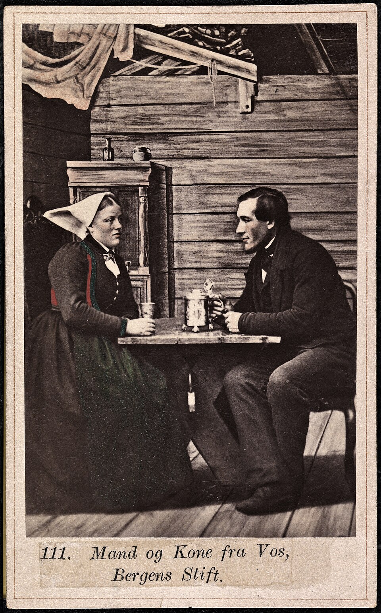
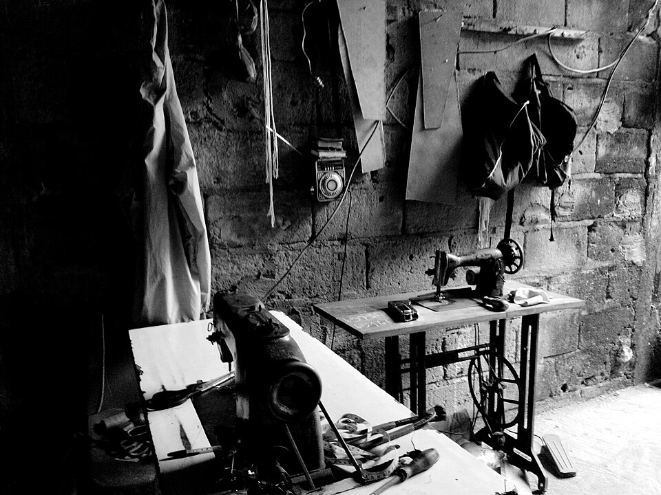
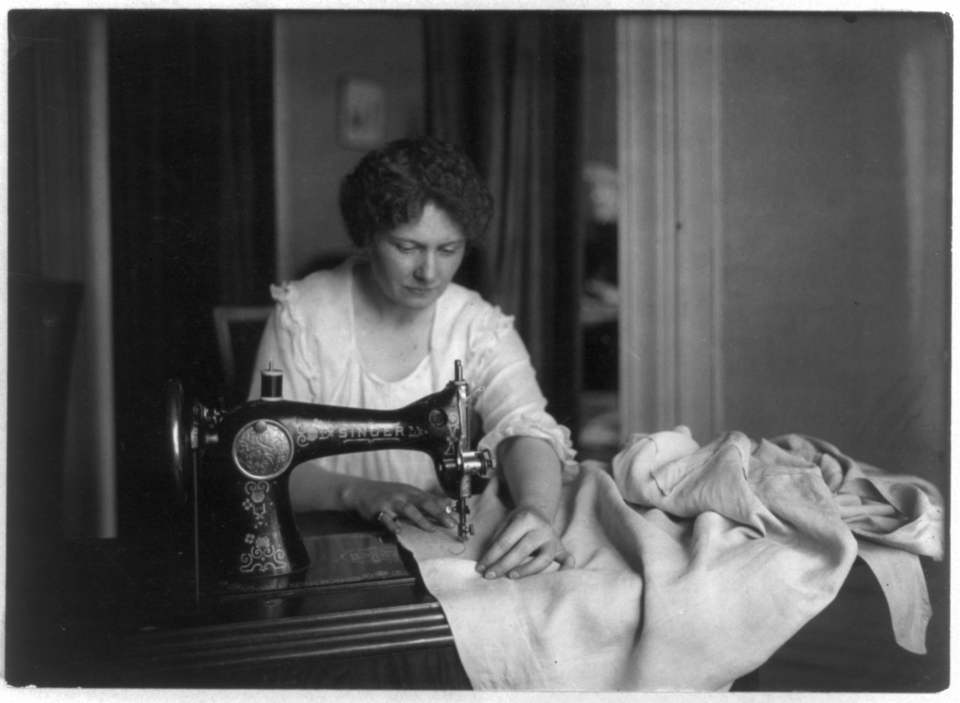
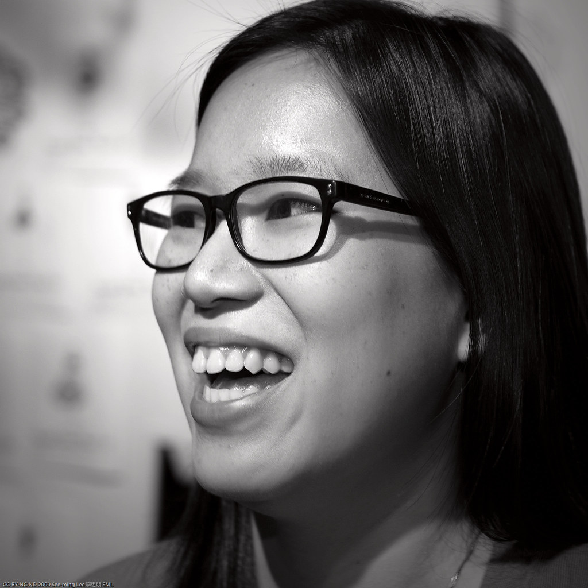
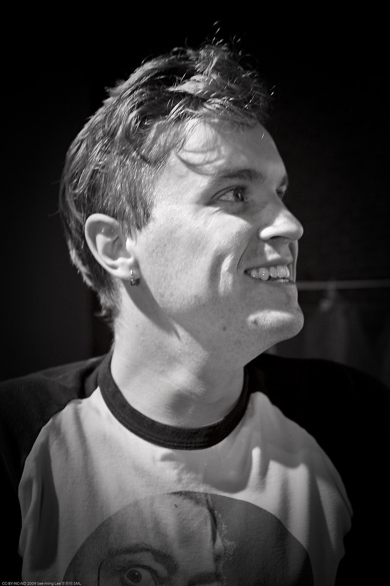
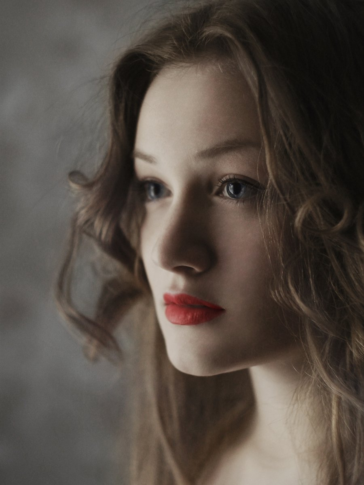
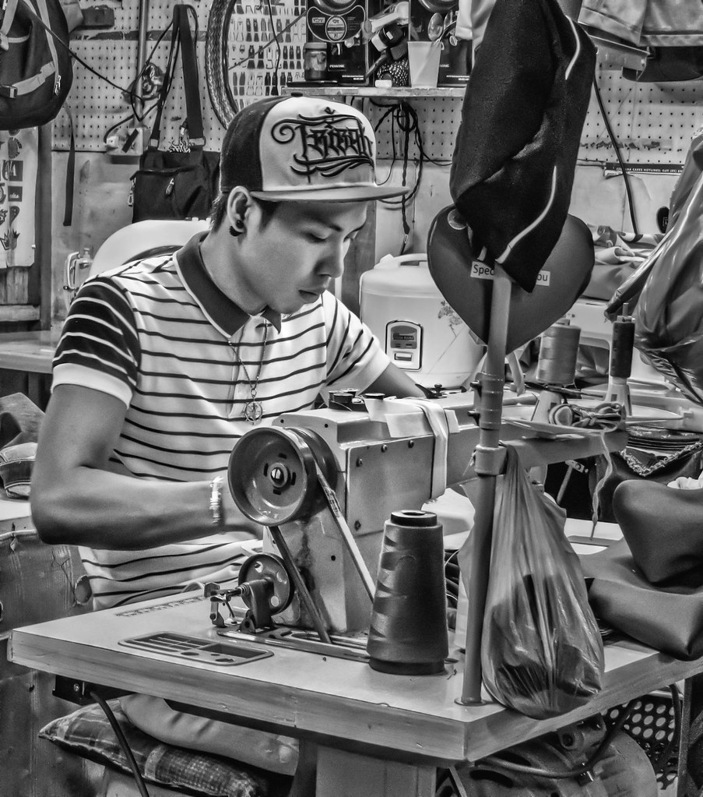

Материал честен
Мы знаем происхождение каждой нити: шерсть сверхтонкой выделки, матовый шёлк, кардированная кожа. Никакой подмены и никакого блеска напоказ.
Дом с 2015 года
«АТЕЛЬЕ» — независимый модный дом из Москвы. Мы строим одежду так, как строят здание: от несущей линии плеча до последней тихой детали.

В 2015 году «АТЕЛЬЕ» начинался как мастерская на сорок квадратных метров, где шили по индивидуальной мерке для нескольких клиентов.
Спустя десятилетие дом вырос в международный бренд, но метод остался прежним: сначала — конструкция и ткань, и только потом — идея. Мы не выпускаем вещь, пока она не сядет точно. Поэтому производство остаётся малым и ручным, а каждая коллекция — высказыванием, а не календарём.
Сегодня под маркой дома работают ателье индивидуального кроя, линия готовой одежды и лаборатория материалов, где мы тестируем текстиль до того, как он попадёт на стол.
Дом в цифрах
Хроника
Путь от первой примерки до международного признания — в одиннадцати датах.

Анна Верейская открывает мастерскую индивидуального кроя в Сокольниках.
Двенадцать силуэтов на закрытом показе в московской галерее.
Запуск первой серийной капсулы из шерсти и хлопка малого тиража.
Флагманский салон на Патриарших прудах в Москве.
Собственный отдел тестирования тканей и цифровые лекала.
Показ в Париже и первый контракт с зарубежными шоурумами.
Пространство на Невском проспекте с зоной индивидуального кроя.
Кожаные сумки и обувь ручной сборки с личной подписью мастера.
Дом выходит на рынки Персидского залива и Франции.
Полная прослеживаемость шерсти и отказ от тяжёлых красителей.
Восемнадцать силуэтов, представленных в Москве осенью 2026 года.
Философия
Всё, что мы делаем, проверяется этими тремя правилами. Если вещь их не проходит — она не выходит из мастерской.
Мы знаем происхождение каждой нити: шерсть сверхтонкой выделки, матовый шёлк, кардированная кожа. Никакой подмены и никакого блеска напоказ.
Акцент — не на деталях, а на пропорции. Линия плеча и талии решают всё; остальное лишь поддерживает тишину силуэта.
Мы шьём вещи вне сезонов. Такую одежду носят годами, ремонтируют и передают — она стареет красиво.

Ателье и мастерская
За каждым изделием стоит человек: конструктор, портной, скорняк. Мы намеренно сохраняем ручные операции там, где машина не чувствует ткань.
Люди дома
Те, кто держит линию, шов и слово.

Основатель, креативный директор
Конструирует каждую капсулу лично — от лекала до финальной примерки.

Главный конструктор
Отвечает за посадку и пропорции: «Плечо — это фундамент».

Лаборатория материалов
Тестирует текстиль и ведёт переговоры с поставщиками шерсти.

Главный портной
Двадцать лет за раскроечным столом и ни одной прямой строчки без смысла.